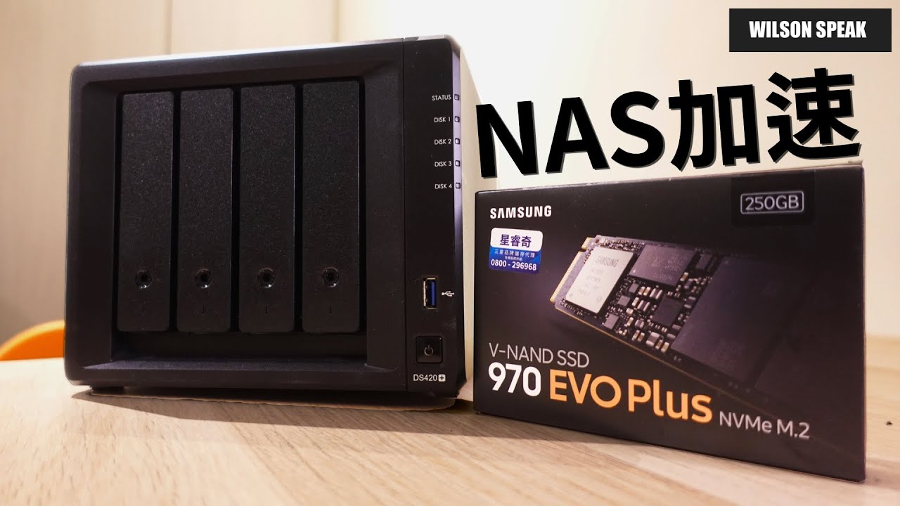

NAS 加 SSD 快取就會變快？先看你在讀什麼資料

原片發布 2022-01-16 · 點封面看原片。
NAS 傳檔慢，看到機器上有 M.2 插槽，很容易想先買 SSD 來加速。但快取要配合工作內容，瓶頸也可能在網路或別的地方。先查慢在哪裡，才知道這筆升級有沒有用。
這篇延伸自 Wilson 2022 年談 DS420+ 與 NVMe SSD 的影片。重點放在快取怎麼幫忙、唯讀與讀寫的差別，以及購買和拆卸前要確認的條件，不把插槽數當成效能保證。
M.2 插槽，是外型線索，不是功能保證
看到 NAS 背後或內部有 M.2 插槽，很多人會直覺認為這可以用來擴充儲存空間，像是在電腦裡組一個新的 SSD 硬碟池。但在許多 NAS 機型，尤其是像 DS420+ 這類型的產品，官方設計的 M.2 插槽主要是給 SSD Cache 使用的，這點非常重要。
如果你把 M.2 插槽當成可以存放檔案的儲存空間，可能會發現系統根本沒讓你建立儲存池。在購買 SSD 之前，你必須確認該機型在 DSM 系統中，是否支援將 M.2 當作儲存池使用，還是只能作為快取層。別只看插槽長得像，功能完全是兩回事。
- 查該 NAS 型號、DSM 版本允許的 SSD 用途。
- 核對 SSD 介面、尺寸與官方相容清單。
- 分清楚建立快取和建立儲存池，確認自己需要哪一種。
快取比較擅長處理什麼工作
快取把一部分資料放在較快的 SSD，讓適合的存取不必每次都等機械硬碟處理。重複存取的資料，以及某些隨機讀寫工作，比較有機會受益；實際效果還看快取命中、容量和工作型態。
多人反覆開啟共同資料，和每天把不同的大影片存一次，是不同情境。資料庫或虛擬機也不能只憑名稱就保證加速，仍要看實際 I/O。先找最常卡住的工作，觀察系統資源，再決定快取是不是針對那個問題。
| 工作內容 | 要觀察什麼 |
|---|---|
| 反覆存取相同小檔或資料 | 是否有重複、隨機存取需求 |
| 持續複製不同的大影片 | 可能受網路或順序傳輸限制 |
| 打算移除讀寫快取 | 按系統程序處理待回寫資料 |
用途比較，不是效能測試。實際支援、SSD 相容性與移除流程以該型號和系統文件為準。
一直複製大影片，可能沒想像中有感
大型影片常見的是連續讀寫，和反覆隨機存取小塊資料不同。Synology 官方也提醒，連續存取或串流未必能從 SSD 快取得到明顯改善。不能把 SSD 單碟規格上的速度，直接當成 NAS 傳檔速度。
這段傳輸還會經過電腦、網卡、交換器、線路與 NAS 的儲存系統。若網路先用滿，加快磁碟也不會讓同一條網路自動變寬。反過來，升級網路後仍可能遇到磁碟限制；要沿整條路檢查，不憑某個速度就確診。
唯讀和讀寫快取，資料角色不同
唯讀快取存的是原始資料的副本，主要協助讀取。讀寫快取則可能包含還沒回寫到主要儲存空間的資料，所以它不只是「隨時可以拔掉的臨時檔」。系統支援哪些模式與冗餘配置，要依型號和版本確認。
SSD 耐用度、相容性、電源保護與系統狀態，都要一起評估。UPS 可以是保護規劃的一部分，但不是資料保證；快取的冗餘也不是備份。重要檔案仍需另外安排可還原的副本。
先檢查瓶頸與相容清單
先在實際工作時看資源監控：網路、磁碟活動、CPU 與記憶體有沒有明顯壓力？單看一次占用率也不夠，最好連同工作內容與等待時間記錄。不同瓶頸可能交互影響，快取不一定能處理。
選 SSD 時除了讀寫速度，也要核對官方相容清單、工作負載和耐用需求。系統若支援快取分析工具，可用它協助估算，但別把估計當成一定有感。先釐清需求，往往比看到特價就買兩支更省事。
需要調整快取，照系統流程處理
要換 SSD 或移除快取，先完成重要資料備份，並依該系統文件在管理介面執行相應程序，等待回寫與狀態確認。尤其讀寫快取，即使已經關機，也不應跳過官方移除流程就直接拆走。
如果快取已故障、系統狀態不明，先查官方故障處理方式或聯絡支援，不要自行試拔不同 SSD。硬體拆卸再依機型安全流程進行。正常完成移除能降低風險，但沒有任何操作能取代平常可驗證的備份。
- 確認備份可用，查明目前快取模式和系統狀態。
- 按該版本官方文件移除或處理快取，等待完成。
- 確認允許拆卸後，再依機型的硬體程序處理。
你可能還想問
只拿 NAS 存影片，需要先裝快取嗎？
通常先看原本是否真的有等待或速度問題，再查網路與連續傳輸瓶頸。大量不同影片的順序存取，未必是快取容易發揮的工作，不用因為有插槽就先裝。
有 UPS，讀寫快取就不會丟資料嗎？
不能這樣保證。電源只是風險的一部分，SSD 故障、系統狀態與操作也有影響。依官方支援配置使用，並保持獨立備份。
M.2 SSD 可以直接增加 NAS 容量嗎？
要看該型號、系統版本與官方支援。快取和儲存池是不同用途，有插槽不代表兩種都能用，購買前先核對。
影片與參考資料
原片發布 2022-01-16。文章整理 2026-11-14，依影片公開標題、說明延伸，並以官方資料校訂。實際設定請對照你的型號與版本。